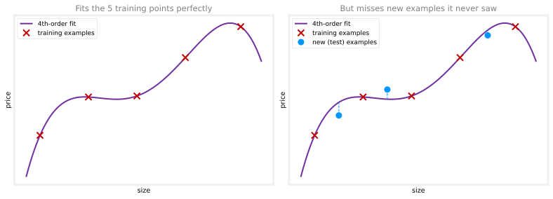
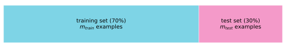
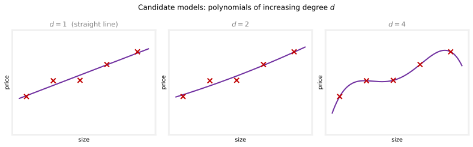
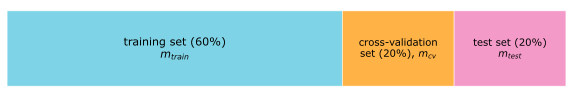
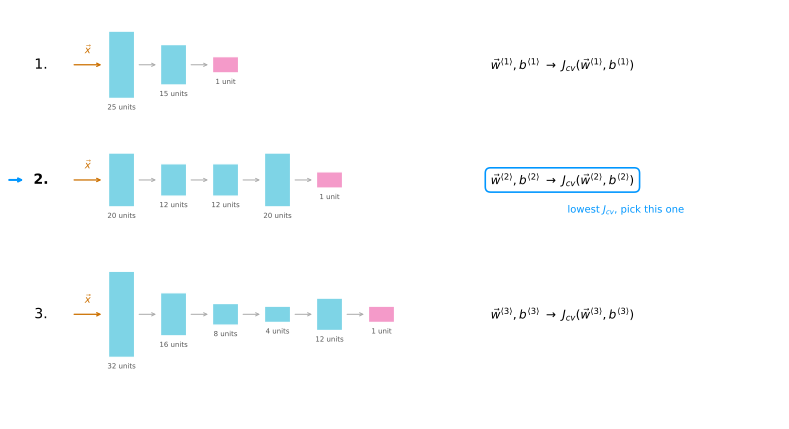
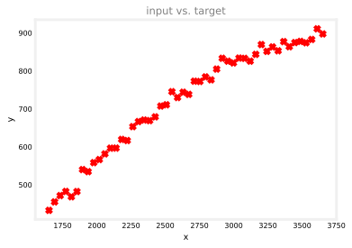
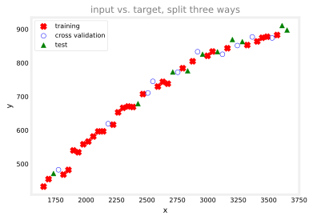
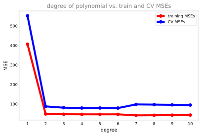
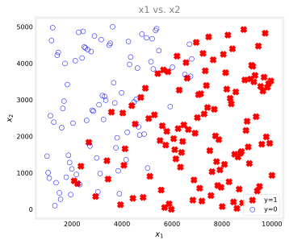

Model Evaluation and Selection
machine-learning
neural-networks
How to evaluate a trained model with a train/test split, and how to choose between models with a cross-validation set without fooling yourself.
By now you have seen a lot of learning algorithms: linear regression, logistic regression, and deep learning with neural networks, with decision trees still to come. Those are powerful tools. But how do you use them effectively? Some teams spend six months building a machine learning system that a more skilled team could have finished in a couple of weeks. The difference is largely how well the team repeatedly makes good decisions about what to do next.
Deciding What to Try Next
Suppose you have implemented regularized linear regression to predict housing prices, with the usual cost function, squared error plus the regularization term,
\[ J(\vec{w}, b) = \frac{1}{2m} \sum_{i=1}^{m} \left( f_{\vec{w},b}(\vec{x}^{(i)}) - y^{(i)} \right)^2 + \frac{\lambda}{2m} \sum_{j=1}^{n} w_j^2. \]
You train the model, and it makes unacceptably large errors in its predictions. What do you try next? There are usually many options.
- Get more training examples.
- Try a smaller set of features.
- Get additional features, such as more properties of each house.
- Add polynomial features, such as \(x_1^2\), \(x_2^2\), or \(x_1 x_2\).
- Decrease \(\lambda\), in case the regularization is too strong.
- Increase \(\lambda\), in case it is too weak.
On any given application, some of these will be fruitful and some will not. Teams have spent literally months collecting more training data on the assumption that more data must help. Sometimes it helps a lot, and sometimes it does not. The key to being effective is investing your time where it will actually pay off.
The tool for that is a diagnostic, a test you can run to gain insight into what is or is not working with a learning algorithm, and guidance on how to improve its performance. A diagnostic can tell you, for example, whether weeks or months of collecting more data are worth it before you spend them. Diagnostics take some time to implement, but running them can be a very good use of your time. The first step toward any diagnostic is having a way to evaluate a model’s performance in the first place.
Review Questions
1. What is a diagnostic in machine learning?
TipAnswer
A test you run to gain insight into what is or is not working with a learning algorithm, and guidance on how to improve its performance. For example, a diagnostic can tell you whether collecting more training data is likely to help before you invest months in it.
1. Your regularized linear regression model makes large errors. Name four different things you could try.
TipAnswer
Any four of these. Get more training examples, try a smaller set of features, get additional features, add polynomial features, decrease \(\lambda\), or increase \(\lambda\). A diagnostic helps you pick which one is worth your time.
1. In the context of machine learning, what is a diagnostic?
An application of machine learning to medical applications, with the goal of diagnosing patients’ conditions.
A process by which we quickly try as many different ways to improve an algorithm as possible, so as to see what works.
This refers to the process of measuring how well a learning algorithm does on a test set (data that the algorithm was not trained on).
A test that you run to gain insight into what is or is not working with a learning algorithm.
TipAnswer
d. A diagnostic is a test that gives insight into what is or is not working with a learning algorithm. Option b describes trying things at random rather than running a targeted test, and option c describes only one specific evaluation technique (a test set), not the general idea of a diagnostic. Option a is unrelated; “diagnostic” here has nothing to do with medical diagnosis.
Evaluating a Model
Say you train a model to predict housing prices from the size \(x\), using a fourth-order polynomial, with features \(x, x^2, x^3, x^4\). Fit to a training set of five points, a fourth-order polynomial passes through the data almost perfectly. But the curve is wiggly, and it is a model you probably do not trust: it fits the training data well, yet it will likely fail to generalize to new examples that were not in the training set.
With a single feature you can plot \(f\) and see that the curve is too wiggly. But real models use more features, say \(x_1\) the size, \(x_2\) the number of bedrooms, \(x_3\) the number of floors, and \(x_4\) the age of the home in years. Plotting a four-dimensional function is not an option, so eyeballing the fit stops working. You need a more systematic way to evaluate how well a model is doing.
Train/Test Split
Here is the technique. Rather than using all your data to train the parameters \(\vec{w}\) and \(b\), split the dataset into two subsets. Put, say, 70 percent of the examples into a training set, and the remaining 30 percent into a test set. Train the model’s parameters only on the training set, then measure its performance on the test set. Splits of 70/30 or 80/20, with most of the data going to training, are both common.

Some notation goes with the split. The training examples are \((\vec{x}^{(1)}, y^{(1)})\) through \((\vec{x}^{(m_{train})}, y^{(m_{train})})\), where \(m_{train}\) is the number of training examples. The test examples are \((\vec{x}_{test}^{(1)}, y_{test}^{(1)})\) through \((\vec{x}_{test}^{(m_{test})}, y_{test}^{(m_{test})})\), where \(m_{test}\) is the number of test examples. With 10 examples and a 70/30 split, \(m_{train} = 7\) and \(m_{test} = 3\).
Test Error and Training Error for Regression
For linear regression with a squared error cost, first fit the parameters by minimizing the usual regularized cost,
\[ \min_{\vec{w},b} \; J(\vec{w}, b) = \frac{1}{2m_{train}} \sum_{i=1}^{m_{train}} \left( f_{\vec{w},b}(\vec{x}^{(i)}) - y^{(i)} \right)^2 + \frac{\lambda}{2m_{train}} \sum_{j=1}^{n} w_j^2. \]
Then, to tell how well the model is doing, compute the test error, the average squared error on the test set,
\[ J_{test}(\vec{w}, b) = \frac{1}{2m_{test}} \sum_{i=1}^{m_{test}} \left( f_{\vec{w},b}(\vec{x}_{test}^{(i)}) - y_{test}^{(i)} \right)^2. \]
Notice that \(J_{test}\) does not include the regularization term. Regularization is part of the training objective, a tool for finding good parameters; the test error is purely a measure of how far the predictions are from the truth. A second useful quantity is the training error, how well the model does on the data it trained on,
\[ J_{train}(\vec{w}, b) = \frac{1}{2m_{train}} \sum_{i=1}^{m_{train}} \left( f_{\vec{w},b}(\vec{x}^{(i)}) - y^{(i)} \right)^2, \]
again without the regularization term.
Now the wiggly fourth-order polynomial can be caught by the numbers alone. Its \(J_{train}\) is very close to zero, because the curve passes through the training points. But on the test examples the algorithm never trained on, there is a large gap between the predicted and actual prices, so \(J_{test}\) is high. Low \(J_{train}\) together with high \(J_{test}\) tells you the model does great on the training set but does not generalize to new data, no plotting required.
Evaluating a Classification Model
The same procedure applies to classification, such as classifying handwritten digits as 0 or 1 with logistic regression. As before, fit the parameters by minimizing the cost function, which for logistic regression is the average logistic loss plus the regularization term,
\[ J(\vec{w}, b) = -\frac{1}{m_{train}} \sum_{i=1}^{m_{train}} \left[ y^{(i)} \log\!\left(f_{\vec{w},b}(\vec{x}^{(i)})\right) + \left(1 - y^{(i)}\right) \log\!\left(1 - f_{\vec{w},b}(\vec{x}^{(i)})\right) \right] + \frac{\lambda}{2m_{train}} \sum_{j=1}^{n} w_j^2. \]
The bracket is the same logistic loss from Course 1. It is small when the predicted probability matches the label and large when it does not. To compute the test error, average that same loss over the test examples, the 30 percent of the data the model never trained on,
\[ J_{test}(\vec{w}, b) = -\frac{1}{m_{test}} \sum_{i=1}^{m_{test}} \left[ y_{test}^{(i)} \log\!\left(f_{\vec{w},b}(\vec{x}_{test}^{(i)})\right) + \left(1 - y_{test}^{(i)}\right) \log\!\left(1 - f_{\vec{w},b}(\vec{x}_{test}^{(i)})\right) \right], \]
and the training error is the same average over the data the algorithm used to minimize the cost,
\[ J_{train}(\vec{w}, b) = -\frac{1}{m_{train}} \sum_{i=1}^{m_{train}} \left[ y_{train}^{(i)} \log\!\left(f_{\vec{w},b}(\vec{x}_{train}^{(i)})\right) + \left(1 - y_{train}^{(i)}\right) \log\!\left(1 - f_{\vec{w},b}(\vec{x}_{train}^{(i)})\right) \right]. \]
As with regression, the regularization term appears only in the training objective, never in \(J_{test}\) or \(J_{train}\).
That works fine. In practice, though, there is a different definition of \(J_{test}\) and \(J_{train}\) that is even more commonly used for classification: the fraction of examples misclassified. Have the model predict
\[ \hat{y} = \begin{cases} 1 & \text{if } f_{\vec{w},b}(\vec{x}) \geq 0.5, \\ 0 & \text{if } f_{\vec{w},b}(\vec{x}) < 0.5, \end{cases} \]
then count. \(J_{test}\) is the fraction of the test set where \(\hat{y}\) does not equal the actual label \(y\) (a 0 classified as a 1, or a 1 classified as a 0), and \(J_{train}\) is the fraction of the training set misclassified.
Splitting the data into a training set and a separate test set gives you a systematic way to evaluate a learning algorithm. With \(J_{train}\) and \(J_{test}\) you can measure performance on both sets, and this is one step toward automatically choosing a model, such as deciding whether to fit housing prices with a straight line, a second-order polynomial, or something higher.
Review Questions
1. Why does evaluating a model by plotting it stop working in practice?
TipAnswer
Plotting works with one or two features, but real models often use many features, and there is no way to plot a function of four or more inputs. A systematic, numerical evaluation is needed instead.
1. Why is the regularization term left out of \(J_{test}\) and \(J_{train}\)?
TipAnswer
The regularization term is part of the training objective, used only to find good parameters. The test and training errors are meant to measure prediction quality, the average gap between predictions and actual values, so they include only the error term.
1. A model has \(J_{train} \approx 0\) and a high \(J_{test}\). What does that tell you?
TipAnswer
The model fits the training data extremely well but generalizes poorly to new examples it was not trained on. It is overfitting the training set.
1. True or false? The better an algorithm does on the training set, the better it will do on generalizing to new data.
TipAnswer
False. The wiggly fourth-order polynomial above is the counterexample: it drove \(J_{train}\) to nearly zero while generalizing badly, so \(J_{test}\) was high. Doing extremely well on the training set can mean the model has simply memorized those specific examples, including their noise, rather than learning the underlying pattern. Only \(J_{test}\) (or \(J_{cv}\)), error on data the model did not train on, tells you how well it generalizes.
1. For classification, what is the most common way to define \(J_{test}\)?
TipAnswer
The fraction of the test set the algorithm misclassifies. Predict \(\hat{y} = 1\) when \(f_{\vec{w},b}(\vec{x}) \geq 0.5\) and 0 otherwise, then count the share of test examples where \(\hat{y} \neq y\). The average logistic loss is an alternative, but the misclassification fraction is used more often.
Model Selection
Once parameters \(\vec{w}, b\) are fit to the training set, the training error is not a good indicator of how well the model will generalize; it is usually much lower than the true generalization error, the average error on brand-new examples. \(J_{test}\) does better. So it is tempting to use the test set to choose a model. Here is why that shortcut fails, and the fix.
Flawed First Attempt
Suppose for the housing problem you consider ten candidate models, polynomials of degree \(d = 1\) (a straight line), \(d = 2\) (a quadratic), \(d = 3\), and so on up to \(d = 10\).

The procedure runs each candidate through the same three-stage pipeline. Write out the model, fit its parameters on the training set, then measure its error.
| Model | \(f_{\vec{w},b}(x)\) | Fit on training set | Evaluate |
|---|---|---|---|
| \(d = 1\) | \(w_1 x + b\) | \(\vec{w}^{\langle 1 \rangle}, b^{\langle 1 \rangle}\) | \(J_{test}(\vec{w}^{\langle 1 \rangle}, b^{\langle 1 \rangle})\) |
| \(d = 2\) | \(w_1 x + w_2 x^2 + b\) | \(\vec{w}^{\langle 2 \rangle}, b^{\langle 2 \rangle}\) | \(J_{test}(\vec{w}^{\langle 2 \rangle}, b^{\langle 2 \rangle})\) |
| \(d = 3\) | \(w_1 x + w_2 x^2 + w_3 x^3 + b\) | \(\vec{w}^{\langle 3 \rangle}, b^{\langle 3 \rangle}\) | \(J_{test}(\vec{w}^{\langle 3 \rangle}, b^{\langle 3 \rangle})\) |
| \(\vdots\) | \(\vdots\) | \(\vdots\) | \(\vdots\) |
| \(d = 10\) | \(w_1 x + w_2 x^2 + \cdots + w_{10} x^{10} + b\) | \(\vec{w}^{\langle 10 \rangle}, b^{\langle 10 \rangle}\) | \(J_{test}(\vec{w}^{\langle 10 \rangle}, b^{\langle 10 \rangle})\) |
NoteReading the angle brackets
The superscript in \(\vec{w}^{\langle 2 \rangle}, b^{\langle 2 \rangle}\) just says which candidate model these parameters came from. Fitting model 2 (the quadratic) produces \(\vec{w}^{\langle 2 \rangle}, b^{\langle 2 \rangle}\); fitting model 5 produces \(\vec{w}^{\langle 5 \rangle}, b^{\langle 5 \rangle}\). It is a third kind of superscript alongside the two you already know, \((i)\) for the \(i\)-th training example and \([l]\) for layer \(l\) of a neural network.
Now look at all ten test errors and pick the degree with the lowest one. Say \(J_{test}(\vec{w}^{\langle 5 \rangle}, b^{\langle 5 \rangle})\) is lowest, so you choose the fifth-order polynomial, \(w_1 x + \cdots + w_5 x^5 + b\), and you report that same \(J_{test}\) as your estimate of how well it will do.
This procedure is flawed. That reported \(J_{test}\) is likely an optimistic estimate of the generalization error, lower than the truth,
\[ J_{test}(\vec{w}^{\langle 5 \rangle}, b^{\langle 5 \rangle}) < \text{generalization error}. \]
The reason is that the procedure fit one extra parameter, the degree \(d\), using the test set. Just as fitting \(\vec{w}, b\) to the training set makes the training error an overly optimistic estimate of generalization error, choosing \(d\) on the test set makes the test error an overly optimistic estimate. Put plainly, out of ten models, the winner on those particular test examples is partly the one that got lucky on them, so its score looks a little better than its true ability. The test set has quietly leaked into your decision.
Training, Cross-Validation, and Test Sets
The fix is to split the data into three subsets instead of two: a training set, a cross-validation set, and a test set, for example 60/20/20.

The cross-validation examples are written \((\vec{x}_{cv}^{(1)}, y_{cv}^{(1)})\) through \((\vec{x}_{cv}^{(m_{cv})}, y_{cv}^{(m_{cv})})\), where \(m_{cv}\) is the number of cross-validation examples. The name refers to this being an extra dataset used to check, or cross-check, the validity of different models. It is not a great name, but it stuck. You will also hear it called the validation set, the development set, or just the dev set; all four terms mean the same thing.
With three subsets come three error measures, none of which includes the regularization term. Alongside \(J_{train}\) and \(J_{test}\) from before, the cross-validation error (also called the validation error or dev error) is
\[ J_{cv}(\vec{w}, b) = \frac{1}{2m_{cv}} \sum_{i=1}^{m_{cv}} \left( f_{\vec{w},b}(\vec{x}_{cv}^{(i)}) - y_{cv}^{(i)} \right)^2. \]
The Right Procedure
Model selection now works like this.
- Fit each candidate model’s parameters on the training set: \(\vec{w}^{\langle 1 \rangle}, b^{\langle 1 \rangle}\) through \(\vec{w}^{\langle 10 \rangle}, b^{\langle 10 \rangle}\).
- Choose the model with the lowest error on the cross-validation set. Compute \(J_{cv}(\vec{w}^{\langle 1 \rangle}, b^{\langle 1 \rangle})\) through \(J_{cv}(\vec{w}^{\langle 10 \rangle}, b^{\langle 10 \rangle})\), and if, say, the fourth-order polynomial has the lowest \(J_{cv}\), pick \(d = 4\).
- Report the generalization estimate using the test set: \(J_{test}(\vec{w}^{\langle 4 \rangle}, b^{\langle 4 \rangle})\).
The pipeline is the same as before, except the middle column of the decision now runs through the cross-validation set instead of the test set.
| Model | Fit on training set | Evaluate on cross-validation set |
|---|---|---|
| \(d = 1\) | \(\vec{w}^{\langle 1 \rangle}, b^{\langle 1 \rangle}\) | \(J_{cv}(\vec{w}^{\langle 1 \rangle}, b^{\langle 1 \rangle})\) |
| \(d = 2\) | \(\vec{w}^{\langle 2 \rangle}, b^{\langle 2 \rangle}\) | \(J_{cv}(\vec{w}^{\langle 2 \rangle}, b^{\langle 2 \rangle})\) |
| \(\vdots\) | \(\vdots\) | \(\vdots\) |
| \(d = 4\) | \(\vec{w}^{\langle 4 \rangle}, b^{\langle 4 \rangle}\) | \(J_{cv}(\vec{w}^{\langle 4 \rangle}, b^{\langle 4 \rangle})\) ← lowest, pick this |
| \(\vdots\) | \(\vdots\) | \(\vdots\) |
| \(d = 10\) | \(\vec{w}^{\langle 10 \rangle}, b^{\langle 10 \rangle}\) | \(J_{cv}(\vec{w}^{\langle 10 \rangle}, b^{\langle 10 \rangle})\) |
Having picked \(d = 4\) using only the cross-validation errors, the model \(w_1 x + \cdots + w_4 x^4 + b\) is the winner, and the test set finally comes out to give the fair estimate \(J_{test}(\vec{w}^{\langle 4 \rangle}, b^{\langle 4 \rangle})\).
Throughout this procedure, the parameters \(\vec{w}, b\) were fit with the training set, and the degree \(d\) was chosen with the cross-validation set. Nothing, neither \(\vec{w}\), \(b\), nor \(d\), was ever fit to the test set. That is exactly why \(J_{test}\) is now a fair, not overly optimistic, estimate of the generalization error.
The same procedure works for choosing among other kinds of models, for example a neural network architecture for handwritten digit recognition. Consider three candidates: a small network, a somewhat larger one, and an even larger one.

Train all three on the training set to get their parameters, \(\vec{w}^{\langle 1 \rangle}, b^{\langle 1 \rangle}\) for the first network through \(\vec{w}^{\langle 3 \rangle}, b^{\langle 3 \rangle}\) for the third. Evaluate each on the cross-validation set (for classification, \(J_{cv}\) is most commonly the fraction of cross-validation examples misclassified) and pick the architecture with the lowest \(J_{cv}\). If network 2 wins, you keep \(\vec{w}^{\langle 2 \rangle}, b^{\langle 2 \rangle}\), and only then use the test set to estimate how well that chosen network will do, \(J_{test}(\vec{w}^{\langle 2 \rangle}, b^{\langle 2 \rangle})\).
NoteBest practice
Make all decisions about your model, fitting parameters, choosing the degree of polynomial, picking a neural network architecture, using only the training set and the cross-validation set. Do not look at the test set at all while making those decisions. Only after settling on one final model do you evaluate it on the test set. Because no decision used the test set, the result is a fair estimate of how the model will generalize to new data.
This model selection procedure is very widely used for automatically choosing what model to use. With a way to evaluate algorithms and select models in hand, the next step is the most powerful diagnostic of all, bias and variance.
Review Questions
1. Why is it flawed to pick the polynomial degree \(d\) using the test set and then report that test error?
TipAnswer
Because \(d\) becomes an extra parameter fit to the test set. Just as the training error is optimistic about parameters fit on the training set, the test error becomes an overly optimistic (too low) estimate of the generalization error once a decision has been made using it.
1. What do the three superscripts mean in \(\vec{w}^{\langle 3 \rangle}\), \(\vec{x}^{(3)}\), and \(\vec{a}^{[3]}\)?
TipAnswer
\(\vec{w}^{\langle 3 \rangle}\) is the parameter vector obtained by fitting candidate model number 3. \(\vec{x}^{(3)}\) is the third training example. \(\vec{a}^{[3]}\) is the activation vector of layer 3 in a neural network. Angle brackets index models, parentheses index examples, square brackets index layers.
1. Name the three subsets of the data and what each one is used for.
TipAnswer
The training set fits the parameters \(\vec{w}, b\) of each candidate model. The cross-validation set (also called validation set or dev set) chooses between models, for example the polynomial degree or the network architecture, by lowest \(J_{cv}\). The test set is touched only at the very end, to report a fair estimate of the chosen model’s generalization error.
1. You are choosing between three neural network architectures for digit recognition. Walk through the selection procedure.
TipAnswer
Train all three networks on the training set to get their parameters. Compute \(J_{cv}\) for each, most commonly the fraction of cross-validation examples misclassified, and pick the architecture with the lowest \(J_{cv}\). Finally, evaluate only that chosen network on the test set to estimate its generalization error.
1. For a classification task, suppose you train three different models using three different neural network architectures. Which data do you use to evaluate the three models in order to choose the best one?
The test set
The cross-validation set
All the data, training, cross-validation, and test sets put together
The training set
TipAnswer
b. The cross-validation set. It exists specifically for comparing candidate models, so the choice of architecture never touches the test set. The training set alone would just reward whichever network memorizes best, and mixing in the test set would make the final \(J_{test}\) no longer a fair estimate of generalization error.
1. Give two other names for the cross-validation set.
TipAnswer
The validation set and the development set (dev set for short). All these terms mean the same extra dataset used to choose between models.
Lab: Model Evaluation and Selection
This lab puts everything on this page into practice on real data. You will split datasets into training, cross-validation, and test sets, evaluate regression and classification models, add polynomial features to improve a linear regression model, and compare several neural network architectures. The code is written out so you can read and run all of it.
A new tool appears here: scikit-learn, the most widely used Python library for classical machine learning. It provides ready-made pieces for exactly the chores this page describes, splitting data, scaling features, building polynomial features, and fitting linear regression.
%config InlineBackend.figure_formats = ['svg']
import numpy as np
import matplotlib.pyplot as plt
# scikit-learn pieces used in this lab
from sklearn.linear_model import LinearRegression # fits a linear model
from sklearn.preprocessing import StandardScaler # z-score feature scaling
from sklearn.preprocessing import PolynomialFeatures # builds x^2, x^3, ... columns
from sklearn.model_selection import train_test_split # splits a dataset randomly
from sklearn.metrics import mean_squared_error # computes the MSE
import tensorflow as tf
from tensorflow.keras.models import Sequential
from tensorflow.keras.layers import Dense
import logging
logging.getLogger("tensorflow").setLevel(logging.ERROR)
tf.autograph.set_verbosity(0)
plt.style.use("../../deeplearning.mplstyle")
np.set_printoptions(precision=2)Regression Dataset
The first task is a regression problem. The dataset has 50 examples of one input feature x and its target y (you can download it here). The arrays are reshaped to 2-D because the scikit-learn commands later require it.
data = np.loadtxt("../../media/data_w3_ex1.csv", delimiter=",")
x = data[:, 0]
y = data[:, 1]
# convert 1-D arrays into 2-D, as later commands require it
x = np.expand_dims(x, axis=1)
y = np.expand_dims(y, axis=1)
print(f"the shape of the inputs x is: {x.shape}")
print(f"the shape of the targets y is: {y.shape}")
fig, ax = plt.subplots(figsize=(6, 4))
ax.scatter(x, y, marker="x", c="r")
ax.set_xlabel("x"); ax.set_ylabel("y")
ax.set_title("input vs. target", color="gray")
plt.show()the shape of the inputs x is: (50, 1)
the shape of the targets y is: (50, 1)
Notice the shape of the data. The target rises sharply at small x and then flattens out. Keep that in mind; it matters later when a straight line struggles to fit it.
Splitting the Data 60/20/20
Scikit-learn’s train_test_split splits a dataset into two random parts. To get three parts, call it twice. The first call keeps 60 percent for training and puts the remaining 40 percent into temporary variables. The second call splits that 40 percent in half, 20 percent for cross-validation and 20 percent for the test set.
# 60% training set, 40% into temporary variables x_ and y_
x_train, x_, y_train, y_ = train_test_split(x, y, test_size=0.40, random_state=1)
# split the 40% in half: cross-validation set and test set
x_cv, x_test, y_cv, y_test = train_test_split(x_, y_, test_size=0.50, random_state=1)
del x_, y_
print(f"the shape of the training set (input) is: {x_train.shape}")
print(f"the shape of the cross validation set (input) is: {x_cv.shape}")
print(f"the shape of the test set (input) is: {x_test.shape}")
fig, ax = plt.subplots(figsize=(6, 4))
ax.scatter(x_train, y_train, marker="x", c="r", label="training")
ax.scatter(x_cv, y_cv, marker="o", facecolors="none", edgecolors="b", label="cross validation")
ax.scatter(x_test, y_test, marker="^", c="g", label="test")
ax.set_xlabel("x"); ax.set_ylabel("y")
ax.set_title("input vs. target, split three ways", color="gray")
ax.legend()
plt.show()the shape of the training set (input) is: (30, 1)
the shape of the cross validation set (input) is: (10, 1)
the shape of the test set (input) is: (10, 1)
That gives \(m_{train} = 30\), \(m_{cv} = 10\), and \(m_{test} = 10\), the 60/20/20 split from the Model Selection section. The random_state=1 argument fixes the randomness so the split comes out the same every run.
Feature Scaling
As you saw in Course 1 with feature scaling, inputs with very different ranges make training harder. That matters here because polynomial features are coming. The input x runs from about 1600 to 3600, so \(x^2\) runs from about 2.56 million to 12.96 million, wildly different scales.
The fix is the z-score,
\[ z = \frac{x - \mu}{\sigma}, \]
where \(\mu\) is the mean of the feature and \(\sigma\) its standard deviation. Scikit-learn’s StandardScaler computes it. fit_transform learns \(\mu\) and \(\sigma\) from the data and applies the transformation in one step.
scaler_linear = StandardScaler()
X_train_scaled = scaler_linear.fit_transform(x_train)
print(f"Computed mean of the training set: {scaler_linear.mean_.squeeze():.2f}")
print(f"Computed standard deviation: {scaler_linear.scale_.squeeze():.2f}")Computed mean of the training set: 2504.06
Computed standard deviation: 574.85Fit and Evaluate a Linear Model
With the data scaled, fitting a linear model is two lines with LinearRegression.
linear_model = LinearRegression()
linear_model.fit(X_train_scaled, y_train)LinearRegression()In a Jupyter environment, please rerun this cell to show the HTML representation or trust the notebook.
On GitHub, the HTML representation is unable to render, please try loading this page with nbviewer.org.
Parameters
Fitted attributes
To evaluate it, compute the training error from the Evaluating a Model section,
\[ J_{train}(\vec{w}, b) = \frac{1}{2m_{train}} \sum_{i=1}^{m_{train}} \left( f_{\vec{w},b}(\vec{x}_{train}^{(i)}) - y_{train}^{(i)} \right)^2. \]
Scikit-learn has a built-in mean_squared_error function, but with one catch. It divides by \(m\), not \(2m\). Dividing by \(2m\) is the convention this course follows (the calculations work either way), so to match the formula above, divide the result by 2. The for-loop version below computes the same thing from scratch to prove they agree.
yhat = linear_model.predict(X_train_scaled)
print(f"training MSE (sklearn function): {mean_squared_error(y_train, yhat) / 2}")
total_squared_error = 0
for i in range(len(yhat)):
total_squared_error += (yhat[i] - y_train[i]) ** 2
mse = total_squared_error / (2 * len(yhat))
print(f"training MSE (for-loop implementation): {mse.squeeze()}")training MSE (sklearn function): 406.19374192533155
training MSE (for-loop implementation): 406.19374192533155Next, the cross-validation error, computed with the same kind of formula,
\[ J_{cv}(\vec{w}, b) = \frac{1}{2m_{cv}} \sum_{i=1}^{m_{cv}} \left( f_{\vec{w},b}(\vec{x}_{cv}^{(i)}) - y_{cv}^{(i)} \right)^2. \]
There is one important subtlety. When scaling the cross-validation set, you must use the mean and standard deviation of the training set, which is why the code calls transform (apply the already-learned \(\mu\) and \(\sigma\)) rather than fit_transform (learn new ones).
WarningAlways scale with the training set’s statistics
Here is the intuition. Say the training set has an input equal to 500, which the z-score scales down to 0.5, and after training, the model accurately maps the scaled input 0.5 to the target 300. Now you deploy the model, and a user feeds it a sample equal to 500. If that sample is scaled with any other mean and standard deviation, it will not land on 0.5, and the model will most likely give a wrong prediction. The transformation the model saw during training is the transformation every future input must get.
X_cv_scaled = scaler_linear.transform(x_cv) # transform, NOT fit_transform
yhat = linear_model.predict(X_cv_scaled)
print(f"Cross validation MSE: {mean_squared_error(y_cv, yhat) / 2}")Cross validation MSE: 551.7789026952216The cross-validation error is much larger than the training error. The straight line is not capturing the curve in this data.
Adding Polynomial Features
The plots showed y rising sharply at small x and flattening out, so a straight line is a poor fit. One fix from the lecture list is adding polynomial features. Scikit-learn’s PolynomialFeatures builds them. With degree=2 it adds a new column holding \(x^2\).
poly = PolynomialFeatures(degree=2, include_bias=False)
X_train_mapped = poly.fit_transform(x_train)
# left column is x, right column is x^2
# (3.24e+03 means "move the decimal 3 places", so 3240)
print(X_train_mapped[:5])[[3.32e+03 1.11e+07]
[2.34e+03 5.50e+06]
[3.49e+03 1.22e+07]
[2.63e+03 6.92e+06]
[2.59e+03 6.71e+06]]Now the two columns have hugely different ranges, exactly the situation feature scaling exists for. Scale them, train, and evaluate on the cross-validation set, applying the same transformations (same polynomial mapping, same training-set scaling) to the cross-validation data.
scaler_poly = StandardScaler()
X_train_mapped_scaled = scaler_poly.fit_transform(X_train_mapped)
model = LinearRegression()
model.fit(X_train_mapped_scaled, y_train)
yhat = model.predict(X_train_mapped_scaled)
print(f"Training MSE: {mean_squared_error(y_train, yhat) / 2}")
X_cv_mapped = poly.transform(x_cv)
X_cv_mapped_scaled = scaler_poly.transform(X_cv_mapped)
yhat = model.predict(X_cv_mapped_scaled)
print(f"Cross validation MSE: {mean_squared_error(y_cv, yhat) / 2}")Training MSE: 49.11160933402516
Cross validation MSE: 87.69841211111934Both the training and cross-validation MSEs drop dramatically compared to the straight line. The quadratic captures the curve.
Trying Degrees 1 Through 10
Why stop at \(x^2\)? This is exactly the ten-candidate model selection setup from earlier on this page. The loop below runs the whole pipeline, map features, scale, train, measure \(J_{train}\) and \(J_{cv}\), once for each degree from 1 to 10, saving the fitted pieces along the way.
train_mses = []
cv_mses = []
models = []
polys = []
scalers = []
for degree in range(1, 11):
# add polynomial features up to this degree
poly = PolynomialFeatures(degree, include_bias=False)
X_train_mapped = poly.fit_transform(x_train)
polys.append(poly)
# scale the training set
scaler_poly = StandardScaler()
X_train_mapped_scaled = scaler_poly.fit_transform(X_train_mapped)
scalers.append(scaler_poly)
# create and train the model
model = LinearRegression()
model.fit(X_train_mapped_scaled, y_train)
models.append(model)
# training MSE
yhat = model.predict(X_train_mapped_scaled)
train_mses.append(mean_squared_error(y_train, yhat) / 2)
# cross-validation MSE (same transformations as training)
X_cv_mapped = poly.transform(x_cv)
X_cv_mapped_scaled = scaler_poly.transform(X_cv_mapped)
yhat = model.predict(X_cv_mapped_scaled)
cv_mses.append(mean_squared_error(y_cv, yhat) / 2)
degrees = range(1, 11)
fig, ax = plt.subplots(figsize=(6.5, 4))
ax.plot(degrees, train_mses, marker="o", c="r", label="training MSEs")
ax.plot(degrees, cv_mses, marker="o", c="b", label="CV MSEs")
ax.set_xlabel("degree"); ax.set_ylabel("MSE")
ax.set_xticks(degrees)
ax.set_title("degree of polynomial vs. train and CV MSEs", color="gray")
ax.legend()
plt.show()
Read the blue cross-validation curve. There is a sharp drop from degree 1 to degree 2, then a relatively flat stretch through the middle degrees, and at the highest degrees the cross-validation error generally gets worse as more polynomial features are added, even though the red training error keeps creeping down. A model that performs well on both sets has learned the pattern without overfitting, so pick the degree with the lowest cross-validation MSE.
# np.argmin returns a list index starting at 0, so add 1 to get the degree
degree = np.argmin(cv_mses) + 1
print(f"Lowest CV MSE is found in the model with degree={degree}")Lowest CV MSE is found in the model with degree=6Only now, with the choice already made, does the test set come out to report the generalization error, applying that chosen model’s saved transformations.
X_test_mapped = polys[degree - 1].transform(x_test)
X_test_mapped_scaled = scalers[degree - 1].transform(X_test_mapped)
yhat = models[degree - 1].predict(X_test_mapped_scaled)
test_mse = mean_squared_error(y_test, yhat) / 2
print(f"Training MSE: {train_mses[degree - 1]:.2f}")
print(f"Cross Validation MSE: {cv_mses[degree - 1]:.2f}")
print(f"Test MSE: {test_mse:.2f}")Training MSE: 47.15
Cross Validation MSE: 79.22
Test MSE: 101.50Same Selection for Neural Networks
The identical process chooses between neural network architectures, and the three candidates here are the very ones from the architecture diagram earlier on this page. One note on the data first. Neural networks can learn non-linear relationships on their own, so the polynomial features can be skipped, degree = 1 below just passes x through unchanged. Scaling still helps gradient descent converge, and once again the cross-validation and test sets are transformed with the training set’s statistics.
degree = 1
poly = PolynomialFeatures(degree, include_bias=False)
X_train_mapped = poly.fit_transform(x_train)
X_cv_mapped = poly.transform(x_cv)
X_test_mapped = poly.transform(x_test)
scaler = StandardScaler()
X_train_mapped_scaled = scaler.fit_transform(X_train_mapped)
X_cv_mapped_scaled = scaler.transform(X_cv_mapped)
X_test_mapped_scaled = scaler.transform(X_test_mapped)The three architectures, written as a function so fresh copies can be built again later for the classification task.
def build_models():
tf.random.set_seed(20) # for reproducible results
model_1 = Sequential([
Dense(25, activation="relu"),
Dense(15, activation="relu"),
Dense(1, activation="linear"),
], name="model_1")
model_2 = Sequential([
Dense(20, activation="relu"),
Dense(12, activation="relu"),
Dense(12, activation="relu"),
Dense(20, activation="relu"),
Dense(1, activation="linear"),
], name="model_2")
model_3 = Sequential([
Dense(32, activation="relu"),
Dense(16, activation="relu"),
Dense(8, activation="relu"),
Dense(4, activation="relu"),
Dense(12, activation="relu"),
Dense(1, activation="linear"),
], name="model_3")
return [model_1, model_2, model_3]Train each one on the training set and record its training and cross-validation MSEs. This is a regression task, so the loss is the mean squared error and the output layer is a single linear unit.
nn_train_mses = []
nn_cv_mses = []
nn_models = build_models()
for model in nn_models:
model.compile(
loss="mse",
optimizer=tf.keras.optimizers.Adam(learning_rate=0.1),
)
model.fit(X_train_mapped_scaled, y_train, epochs=300, verbose=0)
yhat = model.predict(X_train_mapped_scaled, verbose=0)
nn_train_mses.append(mean_squared_error(y_train, yhat) / 2)
yhat = model.predict(X_cv_mapped_scaled, verbose=0)
nn_cv_mses.append(mean_squared_error(y_cv, yhat) / 2)
print("RESULTS:")
for i in range(len(nn_train_mses)):
print(f"Model {i+1}: Training MSE: {nn_train_mses[i]:.2f}, CV MSE: {nn_cv_mses[i]:.2f}")RESULTS:
Model 1: Training MSE: 74.33, CV MSE: 117.01
Model 2: Training MSE: 406.19, CV MSE: 551.78
Model 3: Training MSE: 75.31, CV MSE: 98.96Choose the architecture with the lowest cross-validation MSE, then estimate its generalization error on the test set.
model_num = np.argmin(nn_cv_mses) + 1
yhat = nn_models[model_num - 1].predict(X_test_mapped_scaled, verbose=0)
test_mse = mean_squared_error(y_test, yhat) / 2
print(f"Selected Model: {model_num}")
print(f"Training MSE: {nn_train_mses[model_num - 1]:.2f}")
print(f"Cross Validation MSE: {nn_cv_mses[model_num - 1]:.2f}")
print(f"Test MSE: {test_mse:.2f}")Selected Model: 3
Training MSE: 75.31
Cross Validation MSE: 98.96
Test MSE: 112.42Classification Task
The last part practices the same evaluation and selection on a binary classification task. The dataset has 200 examples with two input features, \(x_1\) and \(x_2\), and a target y of 0 or 1 (you can download it here).
data = np.loadtxt("../../media/data_w3_ex2.csv", delimiter=",")
x_bc = data[:, :-1]
y_bc = data[:, -1]
y_bc = np.expand_dims(y_bc, axis=1)
print(f"the shape of the inputs x is: {x_bc.shape}")
print(f"the shape of the targets y is: {y_bc.shape}")
fig, ax = plt.subplots(figsize=(5.5, 4.5))
pos = (y_bc == 1).flatten()
ax.scatter(x_bc[pos, 0], x_bc[pos, 1], marker="x", c="r", label="y=1")
ax.scatter(x_bc[~pos, 0], x_bc[~pos, 1], marker="o", facecolors="none",
edgecolors="b", label="y=0")
ax.set_xlabel("$x_1$"); ax.set_ylabel("$x_2$")
ax.set_title("x1 vs. x2", color="gray")
ax.legend()
plt.show()the shape of the inputs x is: (200, 2)
the shape of the targets y is: (200, 1)
Split 60/20/20 and scale exactly as before.
x_bc_train, x_, y_bc_train, y_ = train_test_split(x_bc, y_bc, test_size=0.40, random_state=1)
x_bc_cv, x_bc_test, y_bc_cv, y_bc_test = train_test_split(x_, y_, test_size=0.50, random_state=1)
del x_, y_
scaler_bc = StandardScaler()
x_bc_train_scaled = scaler_bc.fit_transform(x_bc_train)
x_bc_cv_scaled = scaler_bc.transform(x_bc_cv)
x_bc_test_scaled = scaler_bc.transform(x_bc_test)
print(f"training set: {x_bc_train.shape}, cv set: {x_bc_cv.shape}, test set: {x_bc_test.shape}")training set: (120, 2), cv set: (40, 2), test set: (40, 2)For classification, the error metric changes to the fraction misclassified from the classification evaluation section. If a model gets 2 out of 5 examples wrong, its error is 0.4. The demo below computes it two ways, with a for-loop and with np.mean, which averages the True/False mismatches (True counts as 1).
# sample model outputs (probabilities) and ground truth
probabilities = np.array([0.2, 0.6, 0.7, 0.3, 0.8])
predictions = np.where(probabilities >= 0.5, 1, 0) # threshold at 0.5
ground_truth = np.array([1, 1, 1, 1, 1])
misclassified = 0
for i in range(len(predictions)):
if predictions[i] != ground_truth[i]:
misclassified += 1
fraction_error = misclassified / len(predictions)
print(f"probabilities: {probabilities}")
print(f"predictions with threshold=0.5: {predictions}")
print(f"targets: {ground_truth}")
print(f"fraction misclassified (for-loop): {fraction_error}")
print(f"fraction misclassified (np.mean): {np.mean(predictions != ground_truth)}")probabilities: [0.2 0.6 0.7 0.3 0.8]
predictions with threshold=0.5: [0 1 1 0 1]
targets: [1 1 1 1 1]
fraction misclassified (for-loop): 0.4
fraction misclassified (np.mean): 0.4Now train the same three architectures on this task. Following the numerically stable pattern, the output layer stays linear and the loss is BinaryCrossentropy(from_logits=True). That means the model outputs logits, so predictions go through a sigmoid first, then the 0.5 threshold, then the misclassification count.
nn_train_error = []
nn_cv_error = []
threshold = 0.5
models_bc = build_models()
for model in models_bc:
model.compile(
loss=tf.keras.losses.BinaryCrossentropy(from_logits=True),
optimizer=tf.keras.optimizers.Adam(learning_rate=0.01),
)
model.fit(x_bc_train_scaled, y_bc_train, epochs=200, verbose=0)
# fraction misclassified on the training set
yhat = model.predict(x_bc_train_scaled, verbose=0)
yhat = tf.math.sigmoid(yhat) # logits -> probabilities
yhat = np.where(yhat >= threshold, 1, 0) # probabilities -> 0/1
nn_train_error.append(np.mean(yhat != y_bc_train))
# fraction misclassified on the cross-validation set
yhat = model.predict(x_bc_cv_scaled, verbose=0)
yhat = tf.math.sigmoid(yhat)
yhat = np.where(yhat >= threshold, 1, 0)
nn_cv_error.append(np.mean(yhat != y_bc_cv))
print("RESULTS:")
for i in range(len(nn_train_error)):
print(f"Model {i+1}: Training error: {nn_train_error[i]:.5f}, CV error: {nn_cv_error[i]:.5f}")RESULTS:
Model 1: Training error: 0.05833, CV error: 0.12500
Model 2: Training error: 0.02500, CV error: 0.15000
Model 3: Training error: 0.05000, CV error: 0.17500Pick the model with the lowest cross-validation error. If two models tie on cross-validation error, you need another criterion to break the tie. You could pick the one with the lower training error, but a more common approach is to pick the smaller model, because it saves computational resources. Finally, report the chosen model’s test error.
model_num = np.argmin(nn_cv_error) + 1
yhat = models_bc[model_num - 1].predict(x_bc_test_scaled, verbose=0)
yhat = tf.math.sigmoid(yhat)
yhat = np.where(yhat >= threshold, 1, 0)
nn_test_error = np.mean(yhat != y_bc_test)
print(f"Selected Model: {model_num}")
print(f"Training Set Classification Error: {nn_train_error[model_num - 1]:.4f}")
print(f"CV Set Classification Error: {nn_cv_error[model_num - 1]:.4f}")
print(f"Test Set Classification Error: {nn_test_error:.4f}")Selected Model: 1
Training Set Classification Error: 0.0583
CV Set Classification Error: 0.1250
Test Set Classification Error: 0.1500That is the full workflow of this page, run end to end twice, once for regression and once for classification. The next topic builds on these same measurements to diagnose bias and variance.
Review Questions
1. Why does the code call fit_transform on the training set but only transform on the cross-validation and test sets?
TipAnswer
fit_transform learns the mean and standard deviation and applies them; transform only applies already-learned ones. The cross-validation and test sets must be scaled with the training set’s mean and standard deviation, because that is the transformation the model saw during training, and every future input must get the same one. Scaling them with their own statistics would feed the model differently-scaled numbers and break its predictions.
1. Scikit-learn’s mean_squared_error divides by \(m\). Why does the lab divide its result by 2?
TipAnswer
The course convention defines the error with a \(\frac{1}{2m}\) factor, while scikit-learn uses \(\frac{1}{m}\). Dividing by 2 matches the course formula. The calculations work either way, since the factor of 2 does not change which model has the lowest error.
1. In the degree-versus-MSE plot, the training error keeps falling as the degree grows. Why not pick the degree with the lowest training MSE?
TipAnswer
Higher-degree polynomials can bend through the training points ever more closely, so the training error almost always keeps dropping. That measures memorization, not generalization. The cross-validation error is what reveals whether the model works on data it did not train on, which is why the degree is chosen by the lowest CV MSE.
1. The classification models output logits. List the steps that turn them into a misclassification fraction.
TipAnswer
Apply a sigmoid (tf.math.sigmoid) to turn the logits into probabilities, threshold at 0.5 (np.where(yhat >= 0.5, 1, 0)) to get 0/1 predictions, then compute the fraction of mismatches with the true labels, np.mean(yhat != y).
1. Two architectures tie on cross-validation error. Give two reasonable ways to break the tie.
TipAnswer
Pick the one with the lower training error, or, more commonly, pick the smaller model, because it saves computational resources at training and prediction time.